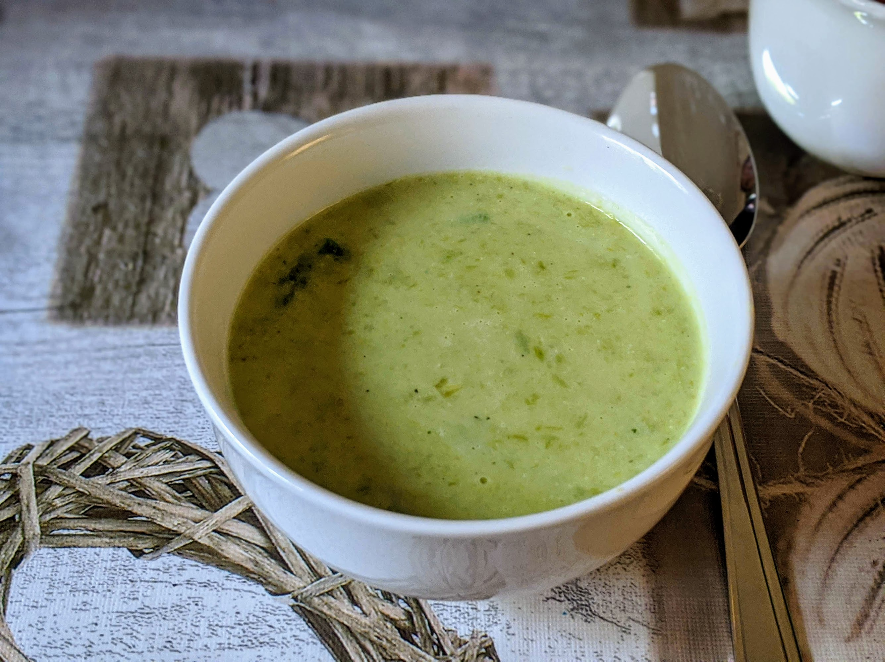

Soupe d'asperges

Pour 4 personnes :
- 600g d'asperges
- Un gros oignon
- 500mL de bouillon de légumes ou de volaille
- Deux cuillères à soupe de beurre
- Deux cuillères à soupe de farine
- 400mL de lait
- Un trait de jus de citron
- Sel, poivre, huile d'olive
- Éplucher et émincer les oignons. Les faire revenir au fond d'une casserole (assez grande pour les asperges) avec un peu d'huile d'olive.
- Laver les asperges, les plier au bout pour enlever leur extrémité la plus dure, et les couper en tronçons de 2-3cm. Garder les bouts pointus à part, mettre le reste dans la casserole.
- Ajouter la moitié du bouillon, porter à ébullition, et laisser mijoter à feu moyen-doux pendant 12 minutes.
- Pendant ce temps, dans une casserole plus grande, faire fondre le beurre à feu moyen, ajouter la farine, et mélanger pour que ça fasse des bubulles. Ajouter doucement l'autre moitié du bouillon pour que ça fasse une sauce bien épaisse.
- Bien mixer les asperges. Les rajouter dans l'autre casserole, puis ajouter les bouts pointus d'asperges et le lait.
- Faire chauffer jusqu'à ce que ça commence tout juste à faire quelques bulles, puis faire mijoter une dizaine de minutes de plus. Ajouter un trait de citron à la dernière minute (aller doucement et en goûtant pour ne pas en mettre trop), servir chaud.
Retour à la liste des recettes